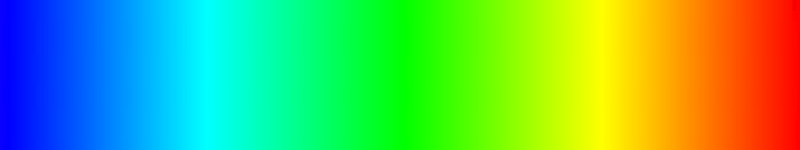

Honesty-Humility Size
Sincerity Saturation
Fairness Hue
Greed Avoidance Curve
Modesty Brightness ◺
To the left is the average person, 65% sincere, 72.6% modest, he’s just like you and me - except he’s not. As it turns out we’re all special little snowflakes when it comes to personality, we’re certainly not all the same and we don’t really fit into personality types either (not for a lack of trying, I might add).
But I hear you, person, “I’m a person and I love identifying with things” — well look no further because, despite appearances, this isn’t just the average person, it’s also a cool way of transforming test results from one of the leading personality tests in the field of phycology (HEXACO-PI-R) into a pretty symbol that you can look at and, best of all, identify with!
Above is the average person, 65% sincere, 72.6% modest, he’s just like you and me - except he’s not. As it turns out we’re all special little snowflakes when it comes to personality, we’re certainly not all the same and we don’t really fit into personality types either (not for a lack of trying, I might add).
But I hear you, person, “I’m a person and I love identifying with things” — well look no further because, despite appearances, this isn’t just the average person, it’s also a cool way of transforming test results from one of the leading personality tests in the field of phycology (HEXACO-PI-R) into a pretty symbol that you can look at and, best of all, identify with!
Honesty-Humility Size
Sincerity Saturation
Fairness Hue
Greed Avoidance Curve
Modesty Brightness ◺
Emotionality Gradient End
Fearfullness Brightness ◺
Anxiety Saturation ◺
Dependance Gradient Start
Sentimentality Hue
Extraversion Size
Social Self-Esteem Saturation
Social Boldness Curve
Sociability Hue 
Liveliness Brightness
Agreeableness Gradient End
Forgivingness Hue 
Gentleness Saturation ◺
Flexibility Gradient Start
Patience Brightness
Conscientiousness Gradient End
Organisation Saturation ◺
Diligence Hue 
Perfectionism Brightness
Prudence Gradient Start
Openness to Experience Size (Points)
Aesthetic Appreciation Size (Dips)
Inquisitiveness Curve (Points) ◺
Creativity Curve (Dips)
Unconventionality No. of Points
Altruism No. of Points (Outer Star)
DEFUNCT